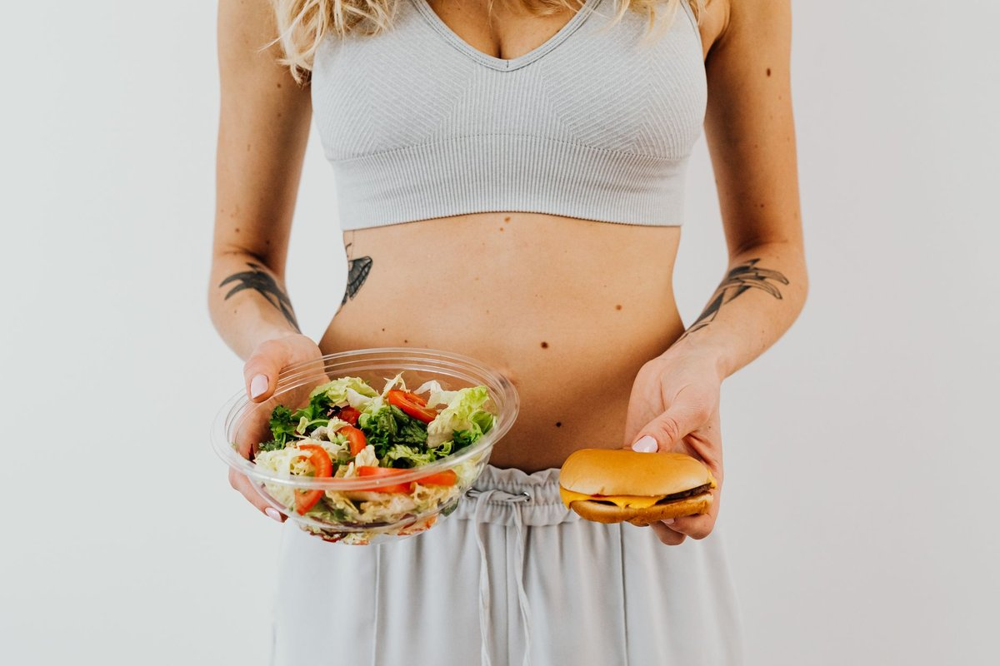

longevity
longevityScientists Discover A Surprising Link Between Vitamin C And Cancer Survival
Scientists Discover A Surprising Link Between Vitamin C And Cancer Survival. Learn how high-dose IV therapies and gut he
Read article →Practical guides on sleep, gut health, stress, and daily movement — written for real schedules, not lab conditions.

 longevity
longevityScientists Discover A Surprising Link Between Vitamin C And Cancer Survival. Learn how high-dose IV therapies and gut he
Read article →People Are Taking An Unapproved Weight-Loss Drug. Ai Found Something Surprising about off-label compounds and sustainabl
Read article →Scientists discover a natural compound that could protect the brain from too much salt. Learn how gut health curbs sodiu
Read article →longevityScientists find 10 different diets linked to slower aging. Learn how simple food choices and restorative sleep can trans
Read article →Massive Study Of 460,000 People Challenges Ultra-Processed Food Cancer Fears: discover practical, science-backed steps to support daily gut
2026-10-21 · Read →Scientists discover how deep sleep builds muscle, burns fat, and boosts the brain. Learn 3 simple, practical shifts to trigger recovery toni
2026-10-20 · Read →
Learn how your gut bacteria could be changing how many calories you absorb and simple, science-backed tweaks to balance your microbiome toda
2026-10-16 · Read →
Discover why Scientists Reveal Why Some Workout Recovery Tricks Can Backfire and how to fix your post-gym routine for better energy and real
2026-10-15 · Read →